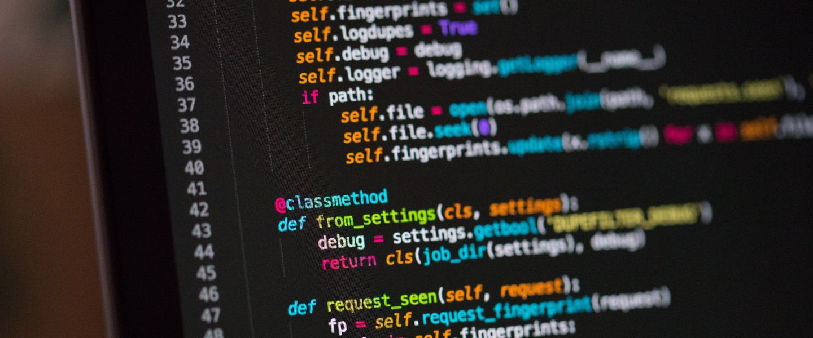

Sur ce site vous retrouverez tous mes projets personnelles réalisées durant ma première année en spécialité NSI en première au Lycée Pierre de Fermat. Les programmes sont rangés dans la plupart du temps dans l'ordre de création. Par conséquant vous pourrez voir une certaine évolution dans la qualité de programation
